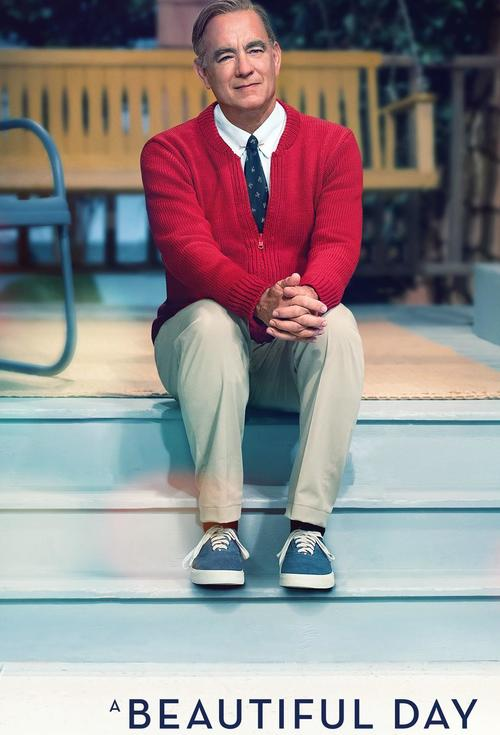
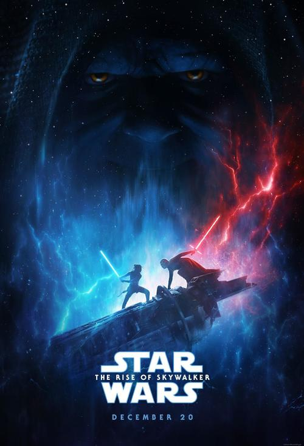

COMMING SOON
Cirque du Soleil in Cinema Presents LUZIA
Metallica: S&M²

Harriet

Motherless Brooklyn
Parasite
Ford v. Ferrari

A Beautiful Day in the Neighborhood

Star Wars: The Rise of Skywalker

A Hidden Life
Premiere of the month
Terminator: destino oscuro